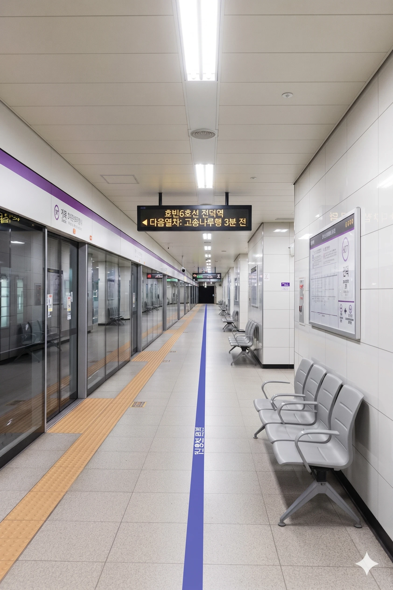
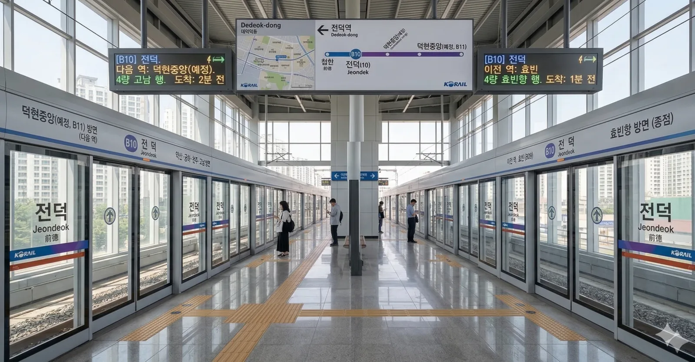
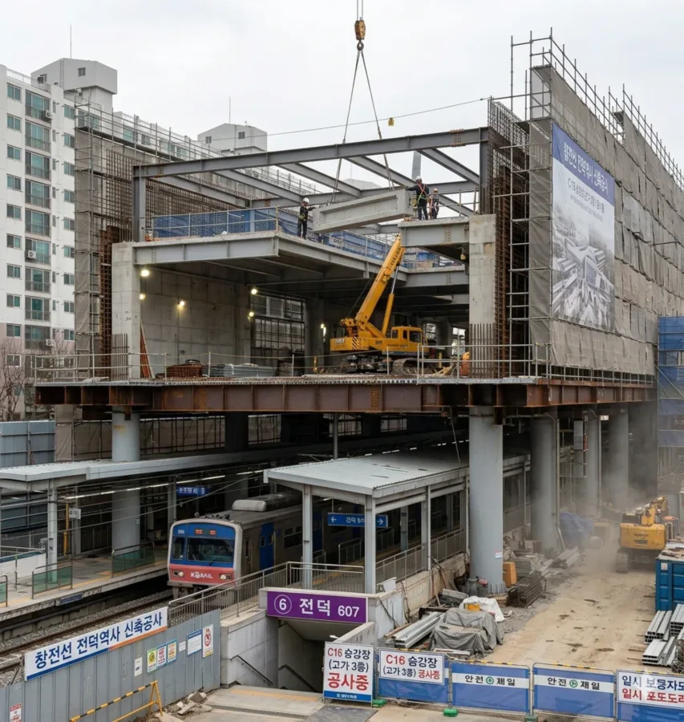

- 1. 개요
- 2. 역 정보
- 3. 역 주변 정보
- 3.1. 출구 정보
- 3.2. 주요 시설 및 인프라 상세
- 4. 역 이용객 통계
- 5. 승강장
- 5.1. 6호선 (지하 2층)
- 5.2. 빈효선 (지상 2층)
- 5.3. 창전선 (지상 3층, 예정)
- 6. 기타 (역사적 배경 및 교통 특징)
- 7. 여담 (새롭게 떠오르는 전덕역 7대 전설)
1. 개요
효빈 도시철도 6호선 607번, 빈효선 광역전철 B10번 및 미개통 노선인 창전선 C16번(예정). 효빈광역시 동구 덕현동 11-22 지하 소재.
2. 역 정보
6호선의 경우 원래는 초기 계획에 없던 역이었으나, 지상으로 달리는 빈효선 광역전철과의 연계를 더욱 효율적으로 하기 위해 2018년에 급히 착공하여 2021년에 개통한 특이한 이력을 지니고 있다.
추후 개통될 하늘색 모노레일 창전선은 지상 3층 고가 역사로 건설되어, 지하의 6호선, 지상 2층의 빈효선과 함께 극단적인 수직 이동을 요구하는 입체적인 트리플 환승역을 형성하게 된다. 창전구와 북구, 동구를 잇는 핵심 교통 허브로서의 역할이 기대된다.
3. 역 주변 정보
3.1. 출구 정보


 전덕역 출구 정보
전덕역 출구 정보
|
||
|---|---|---|
| 번호 | 주요 시설 및 방향 | 비고 |
| 1 | 전덕역 아파트 (동구 덕현4동·5동 [덕현동]) | 주거 밀집구역 |
| 2 | 결나공원 (410m), 효빈광역시 상수도사업본부 (368m) | 공공기관/공원 |
| 3 | 산군중학교, 덕현3동행정복지센터, 전덕초등학교, 전덕중학교, 천풍공원 (391m), 포제시장 (동구 덕현3동), 덕현역 아파트 2단지 (동구 덕현3동), 효빈덕현3동우체국 |
학교/시장/우체국 |
| 4 | 삼댁공원, 덕현종합복지관 (동구 덕현동 102), 마루마트 동구본점 (424m) | 대형마트/복지관 |
3.2. 주요 시설 및 인프라 상세
- 주거 시설: 덕현동의 인구 감소 속에서도 역세권 파워를 유지하는 아파트들이 있다. 1번 출구 방면에는 전덕역 아파트가, 3번 출구 방면에는 이름부터 기묘하게 꼬여버린 덕현역 아파트 2단지가 자리 잡고 있어 지역 주민들의 발이 되어준다.
- 공공 및 복지 기관: 2번 출구 방면 도보 368m 거리에는 효빈시의 생명수를 책임지는 효빈광역시 상수도사업본부가 웅장하게 서 있다. 또한 4번 출구 앞의 덕현종합복지관은 동구 지역 어르신들과 취약계층을 위한 핵심 복지 인프라로 활약 중이다.
- 상업 및 우정 시설: 4번 출구에서 400m가량 떨어진 곳에 24시간 불야성을 이루는 창고형 초저가 할인점 마루마트 동구본점이 있어 장보기 수요를 싹쓸이하고 있다. 3번 출구 방면에는 구도심의 정취가 남은 포제시장과 지역 택배의 핵심인 효빈덕현3동우체국이 위치해 있다.
- 공원 인프라: 역 주변으로 결나공원(2번 출구), 천풍공원(3번 출구), 삼댁공원(4번 출구)이 삼각편대를 이루며 녹지를 제공한다. 특히 결나공원은 체육 시설 위주, 천풍공원은 산책 및 여가 위주로 주민들의 활용 목적이 명확히 나뉘어 있다.
4. 역 이용객 통계
|
전덕역 이용객 통계
| |||
|---|---|---|---|
| 연도 | 6호선 | 빈효선 | 총합 |
| 2020년 | - | 9,873명 | 9,873명 |
| 2021년 | 12,060명 | 9,983명 | 22,043명 |
| 2022년 | 14,024명 | 11,609명 | 25,633명 |
| 2023년 | 14,270명 | 11,813명 | 26,083명 |
| 2024년 | 14,521명 | 12,021명 | 26,542명 |
5. 승강장
5.1. 6호선 (지하 2층)

| 덕 현 ↑ | ||||
| 하 | ㅣ | ㅣ | 상 | |
| ↓ 전천중앙 | ||||
| 상 |
효빈 도시철도 6호선 |
마잡 방면 |
| 하 |
효빈 도시철도 6호선 |
고송나루 방면 |
5.2. 빈효선 (지상 2층)

| ↑ 효 빈 | |||
| ㅣ | 하 | 상 | ㅣ |
| ↓ 덕현중앙 (개통예정) / 북 택 (운영중) | |||
| 상 |
빈효선 광역전철 (완행/급행 공용) |
효빈항 방면 (급행은 효빈 정차) |
| 하 |
빈효선 광역전철 (완행/급행 공용) |
약산 · 궁하 · 천주 · 고남 방면 (다음역: 덕현중앙역 개통예정 / 급행은 북택 정차) |
5.3. 창전선 (개통 예정)

| 덕현중앙 (예정) ↑ | |||
| 하 | ㅣ | ㅣ | 상 |
| ↓ 효 빈 | |||
| 상 |
창전선 |
덕현중앙 · 하성천 · 팔조 방면 |
| 하 |
창전선 |
효빈 · 시청 · 토모리해수욕장 방면 |
6. 기타
-
'고난의 동지'가 만난 눈물의 환승역
전덕역은 효빈 도시철도 6호선과 빈효선 광역전철이 만나는 환승역이지만, 두 노선 모두 윤대환 전 시장 시절(2006년~)의 교통 정책 혼선으로 인해 공사가 중단되거나 지연된 흑역사를 공유하고 있다.- 6호선: 당시 '전차 폐지 및 버스 중심' 공약으로 인해 타당성 조사가 파기되는 등 백지화 위기를 겪었다.
- 빈효선: 광역철도 사업 축소 및 예산 집행 보류로 인해 개통이 하염없이 미뤄졌었다.
-
지하와 지상의 극적인 만남
전덕역의 가장 큰 특징은 지하 깊숙이 위치한 6호선과 지상(고가)을 달리는 빈효선의 수직적 교차다.- 6호선 (지하): 효빈교통공사가 운영하는 중형 전동차가 지하 터널을 통해 들어온다.
- 빈효선 (지상): 코레일(KORAIL)이 운영하는 대형 전동차가 탁 트인 지상 선로를 통해 시원하게 진입한다.
-
운영 주체의 차이와 '100원의 장벽'
두 노선은 위치뿐만 아니라 운영 주체도 다르다(6호선: 효빈교통공사 / 빈효선: 한국철도공사). 이로 인해 환승 게이트 통과 시 별도 운임 100원이 추가로 부과된다. 시민들 사이에서는 "같은 역에서 갈아타는데 왜 돈을 더 내냐"는 볼멘소리가 나오기도 하지만, 두 노선이 제공하는 압도적인 이동 편의성(강남-강북 연결, 시외 연결) 덕분에 '통행세'라 생각하고 감수하는 분위기다. 코레일 파업 시에는 지상의 빈효선만 배차 간격이 늘어나는 등 운영 상황의 차이를 피부로 느낄 수 있는 곳이기도 하다. -
동구 주민들의 탈출구이자 '덕질' 베이스캠프
역이 위치한 덕현동은 거대한 아파트 숲을 이루는 주거 밀집 지역이다. 전덕역 개통 전에는 버스에 의존해야 했으나, 이제는 6호선을 타고 북구(고송/중수)나 청엽구로 마실을 가거나, 빈효선을 타고 효빈항이나 타 도시로 빠르게 이동할 수 있게 되어 동구 교통 혁명의 중심지가 되었다. 특히 교통이 편리하고 주거 환경이 쾌적해, 인근 성지(고송동 등)로 이동하기 위한 애니메이션 팬들의 거주지로도 인기가 높다. -
사라진 중간 번호들의 비밀 (덕현중앙역 등)
빈효선 승강장의 역명판을 보면, 전덕역의 번호는 B10번인데 다음 정차역인 북택역은 B13번으로 표기되어 있다. 중간에 B11번과 B12번이 비어 있는데, 이는 빈효선 계획 초기에 구상되었으나 여러 사정으로 무산되거나 보류된 미개통 역들의 흔적이다.덕분에 처음 타는 사람들은 자기가 역을 놓친 줄 알고 식겁한다 카더라.참고로 B11번과 B12번의 원래 명칭은 덕현중앙역과 하성천역으로 계획되어 있었다고 하며, 특히 덕현중앙역은 빈효선 일반열차(완행)의 개통예정지로 여전히 남아있다.
7. 여담 (새롭게 떠오르는 전덕역 7대 전설)
7.1. 아파트 이름의 대혼돈: '전덕역 아파트' vs '덕현역 아파트 2단지'
전덕역을 기준으로 1번 출구 코앞에 있는 아파트의 이름은 정직하게 '전덕역 아파트'다. 그런데 정반대 편인 3번 출구 쪽으로 나가면 황당하게도 '덕현역 아파트 2단지'라는 명패를 단 아파트가 나온다. 심지어 진짜 덕현역(6호선)은 여기서 무려 한 정거장(약 1km)이나 떨어져 있다.
이 대혼돈의 원인은 과거 동구 덕현동의 인구가 19만 명에서 10만 명으로 반토막 나며 행정동 경계가 기형적으로 꼬였기 때문이다. 덕현역 아파트 2단지(덕현3동 소속)가 지어질 1980년대 후반 당시엔 전덕역이 아예 계획조차 없었기에 이 지역에서 가장 근본 있는 지명인 '덕현'을 가져다 썼다. 하지만 세월이 흘러 2021년 6호선 전덕역이 이 아파트 코앞에 뚫려버리면서, 졸지에 "전덕역에 내렸는데 왜 덕현역 아파트가 나와요?"라는 외부인들의 질문 공세와 택배 기사님들의 오배송에 시달리게 된 것이다. 부녀회에서는 아파트 이름을 '전덕 센트럴'로 바꾸려 시도했으나, 이미 건너편 전덕역 아파트(덕현4·5동 소속)가 이름을 선점해버리는 바람에 피눈물을 머금고 짝퉁(?) 취급을 감수하고 있다.
7.2. '아쿠아(Aqours)' 수돗물의 발원지? 효빈광역시 상수도사업본부 성지순례
2번 출구에서 368m만 걸어가면 효빈시의 생명수를 책임지는 효빈광역시 상수도사업본부 거대 청사가 나온다. 일반적인 관공서라면 철저히 무시당하겠지만, 이곳은 효빈시의 수돗물 공식 브랜드인 '효빈 아쿠아 (Hyobin Aqua)'를 통제하는 심장부다.
브랜드 이름이 《러브라이브! 선샤인!!》의 그룹 Aqours(아쿠아)와 철자만 다를 뿐 발음이 완벽하게 똑같다 보니, 전국에서 몰려든 럽라 팬들이 본부 앞 야외 식수대(일명 '성수대')에서 수돗물을 벌컥벌컥 들이켜며 "이것이 진정한 아쿠아의 물맛인가!"라고 감탄하는 콩트를 벌인다. 상수도본부 공무원들은 처음엔 "저 젊은이들이 왜 시청도 아니고 수돗물 사업소 앞에서 사진을 찍나" 싶어 식겁했으나, 박효빈 시장의 덕업일치 정책 기조에 힘입어 아예 종이컵 디스펜서를 아쿠아 멤버 색상별로 비치해놓고 무상 수돗물 홍보 효과를 톡톡히 누리고 있다.
7.3. 동구의 빛과 소금, 마루마트 동구본점과 '놋포빵' 대란
4번 출구에서 도보 424m 거리에는 거대 유통 공룡들을 피해 외곽을 공략하는 24시간 창고형 할인점 마루마트 동구본점이 샛노란 간판을 빛내고 있다. 매장 안을 걷다 보면 파이프가 훤히 드러난 창고형 천장 아래로 "오하나~ 빵이 이렇게나 싸다니 기적이구만유! 미라이즈라~"라는 구수한 시보 방송이 쩌렁쩌렁 울려 퍼진다.
이 마트의 비공식 마스코트가 하필 빵순이 캐릭터인 '쿠니키다 하나마루'라, 마루마트 제빵 코너에서는 시즈오카 누마즈의 명물인 '놋포빵(기린 빵)'을 매일 아침 트럭 단위로 구워낸다. 덕분에 동구 주민들은 물론이고 전덕역을 거쳐 가는 빈효선 광역전철 통근러들까지 퇴근길에 마루마트에 들러 놋포빵을 쓸어 담는 바람에, 저녁 8시만 되면 제빵 코너가 폭격을 맞은 듯 텅텅 비는 광경이 연출된다.
7.4. 결나공원 vs 천풍공원의 기묘한 용도 분할 (운동족 vs 코스어)
전덕역을 기준으로 2번 출구 쪽의 결나공원(410m)과 3번 출구 쪽의 천풍공원(391m)은 도보 5분 거리임에도 분위기가 극과 극을 달린다. 결나공원은 인조잔디 축구장과 우레탄 트랙이 쫙 깔려 있어, 주말 아침마다 조기축구회 아저씨들의 고함 소리와 파워워킹을 하는 어르신들의 땀내로 가득한 전형적인 체육 공원이다.
반면, 천풍공원은 유럽풍 조각상과 예쁜 장미 덩굴 터널, 그리고 고풍스러운 인공 분수대가 있어 코스프레어들의 야외 스냅 촬영 성지로 완벽하게 굳어졌다. 주말 오후만 되면 파스텔 톤 가발을 쓴 덕후들이 천풍공원에서 우아하게 포즈를 취하고, 길 건너 결나공원에서는 축구공이 뻥뻥 날아다니는 기묘한 투트랙 평행우주가 펼쳐진다. 가끔 길을 잃은 코스어가 결나공원으로 넘어가면 조기축구회 아저씨들이 "아이고 학생, 오늘 동네에 무슨 만화 축제 있는가배?"라며 하프타임용 귤을 쥐여주기도 한다.
7.5. 포제시장 상인들과 효빈덕현3동우체국의 '굿즈 배송 전담반' 진화
3번 출구 방향의 구도심 상권인 포제시장 안쪽에는 작지만 강한 효빈덕현3동우체국이 숨어 있다. 이 우체국 직원들의 택배 포장 스킬은 효빈시 전체 우정 사업본부에서도 탑티어로 꼽힌다. 전덕역이 6호선과 빈효선이 만나는 교통의 요지이다 보니, 타지에서 효빈에 놀러 온 성지순례객들이 무거운 굿즈(네소베리 인형, 아크릴 스탠드, 족자봉 등)를 들고 기차에 타기 벅차 포제시장 우체국에 들러 집으로 택배를 부치기 때문이다.
피규어 박스 모서리가 1mm라도 구겨지면 오타쿠들이 세상을 잃은 듯 오열한다는 사실을 깨달은 우체국 국장님은 아예 창구 한편에 '오타쿠 굿즈 전용 특수 에어캡 포장 데스크'를 신설해 버렸다. 심지어 우체국 옆 포제시장 과일가게 할머니들은 빈 택배 박스를 구하러 다니는 덕후들을 위해, 매일 아침 단단하고 깨끗한 사과 박스를 차곡차곡 접어놓고 천 원에 파는 상부상조의 창조 경제를 실천 중이시다.
7.6. 사라진 번호 B11·B12의 미스터리와 창전선(C16) 유령 3층 고가
빈효선 전덕역 승강장(B10)에서 다음 역인 북택역(B13)으로 가는 노선도를 멍하니 쳐다보면, 중간에 B11과 B12가 통째로 증발해 있는 것을 알 수 있다. 이는 과거 덕현동과 안천구 경계의 복잡한 정치적 이권 다툼과 예산 문제 탓에 덕현중앙역(B11)과 하성천역(B12)의 공사가 무기한 보류되었기 때문이다. 덕분에 빈효선을 처음 타는 외지인들은 "뭐야, 나 방금 역 두 개를 순간 이동으로 지나친 건가?"라며 혼란에 빠진다. (현재 덕현중앙역은 뒤늦게 완행열차 전용으로 개통이 확정되었다.)
게다가 전덕역 지상 3층 허공에는 2033년에 개통할 창전선을 위해 미리 지어둔 콘크리트 뼈대 구조물이 흉물(?)스럽게 방치되어 있다. 효빈교통공사 측은 이 을씨년스러운 빈 공간을 가리기 위해 창전선 공식 마스코트인 심세이의 초대형 일러스트 가림막을 쳐놓았다. 가림막에는 "기다려라 덕현동. 2033년에는 내가 하늘길을 열어주마."라는 중2병스러운 대사가 적혀 있는데, 매일 이 앞을 지나는 출근길 주민들은 "그때면 내 나이가 환갑이다 이놈아!"라며 삿대질을 하는 것이 전덕역의 씁쓸한 유머 코드로 자리 잡았다.
7.7. 덕현종합복지관의 세대 통합: 할아버지와 손자의 오타쿠 토론
4번 출구 앞 덕현종합복지관(덕현동 102)은 노인 복지 센터와 청소년 방과 후 아카데미가 한 건물에서 동시에 운영되는 곳이다. 평범한 복지관 같지만, 효빈시 특유의 서브컬처 문화가 노인 세대에게까지 스며들면서 매일 오후 대환장 파티가 열린다.
처음에는 스마트폰 사용법 강좌를 듣던 할아버지들이 손자들과 대화하기 위해 유튜브로 애니메이션 요약 리뷰를 찾아보기 시작하더니, 이제는 복지관 1층 휴게실 장기판 앞에서 "아니 김 영감, 이번 분기 '걸즈 밴드 크라이'에서 니나가 밴드를 탈주한 건 개연성이 너무 부족하지 않나?" "이 사람아, 락(Rock)의 혼을 모르는구만! 그 욱하는 성질머리가 바로 낭만이야!"라며 고래고래 언쟁을 벌이는 진풍경이 연출된다. 방과 후에 밥을 먹으러 복지관에 온 덕현동 중고등학생들은 이 엄청난 내공의 할아버지들을 보며 "전덕역 복지관 경로당은 숨은 고수들의 마계(魔界)다"라며 혀를 내두른다.